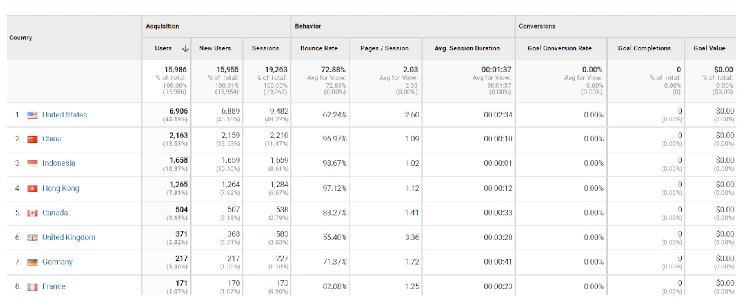

Scholarly work at the Robert B. Davis Institute for Learning (RBDIL) focuses
on the nexus of research and educational practice, particularly issues of
learning and teaching in the content areas of mathematics and STEM learning.
Its mission is twofold:
to conduct detailed studies over time and across a variety of educational
settings to identify how individual learners and groups of learners
construct mathematical and scientific ideas and forms of reasoning; and
to use findings and products of research in teacher education for
promoting instructional practices through which students develop critical
thinking and reasoning abilities grounded in their understanding of
mathematics and science.
With a team of doctoral students, faculty and consultants, the objectives of RBDIL are:
Oversee the RBDIL video cloud data collection of 5000+ hours.
Assist doctoral students, researchers and faculty to retrieve video data for
analysis. This involves working with current researchers and doctoral students
who study video data for projects and dissertation work.
Prepare identified videos for ingesting into the Video Mosaic repository (VMC).
This requires completing metadata forms for searches as per requirements of
Rutgers Library and making the video data available for ingesting into the VMC.
Training for preparation of metadata requirements for video ingestion into
the VMC, working collaboratively with Rutgers Library colleagues and staff.
Pursue research grant with Rutgers University Libraries to build AI tools
for cataloging data housed in IML Collection
Publish video narratives on the VMC, scholarly journals and for use of
teacher education.
For example, US and China are the top two countries of origin where the
website has visits. Following are Asian and European countries. Image of
the detailed appendix below. Notice the darker blue regions indicates
countries with most views (See Map in Figure 2 below).
Work with faculty, current students, and graduates in accessing video data
for the creation of video narratives (VMCAnalytics); This will require
ingesting new videos in to the VMC and completing metadata library
requirements as per Rutgers Library requirements.
Assist graduate students enrolled in GSE courses that require the creation
of analytics to identify clips and or videos, as per their needs.
This may require ingesting new videos into the VMC and one-on-one help.
Assist new VMC users in learning how to use the RUanalytic tool.
Assist scholars in identifying videos for creating VMCAnalytics for the
special Journal of Mathematical Behavior issue, The Longitudinal Study this
involves a set of 6-12 papers that will be linked to newly created VMCAnalytics.
Monitor the receipt of Community Code of Contact forms for authors whose
VMCAnalytics are accepted for publication; these forms are required and
will involve monitoring about 40 submissions per year.
Work with RBDIL Director to create and implement a review system
for VMCAnalytics submitted for publication.
Assist researchers in creating VMCAnalytics for teaching and scholarly work.
Over the last 5 years, over 50 new VMCAnalytics have been created and 49
published. The publishing of VMCAnalytics on the VMC requires outside review.
Manage the review of VMCAnalytics submittd for publication. For examples
of recently published analytics, see Appendix B.
See
https://videomosaic.org/analyticsViewers of VMC

Viewers by Country